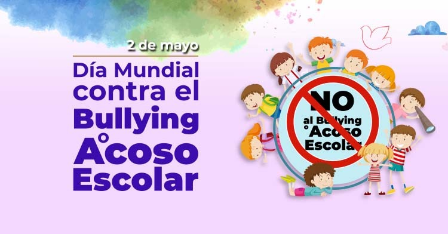

Los objetivos en la lucha contra el bullying se centran en la prevención, detección e intervención temprana, así como en la promoción de entornos seguros y saludables para todos los estudiantes. Se busca fomentar la empatía, el respeto y la solidaridad, además de desarrollar habilidades de comunicación y resolución de conflictos.
• Fomentar en los niños y niñas de la Institución Educativa vivir en una convivencia sana, donde en los recreos de la I.E se sientan libres de realizar sus actividades de esparcimientos sin afectar la buena convivencia entre estudiantes.
• Atender las necesidades de los estudiantes en el momento preciso.
• Establecer un clima de confianza y relaciones horizontales entre los diversos
tutores y los demás estudiantes, para que se den las condiciones favorables en
el que el estudiante se sienta seguro durante el recreo.
• Generar en la institución educativa durante las horas de recreos un ambiente
optimo entre los estudiantes, con relaciones interpersonales, caracterizadas por
la confianza, el afecto y el respeto que permitan la sana convivencia.
estudiantes.
